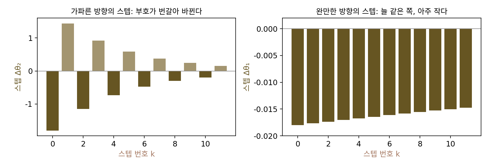
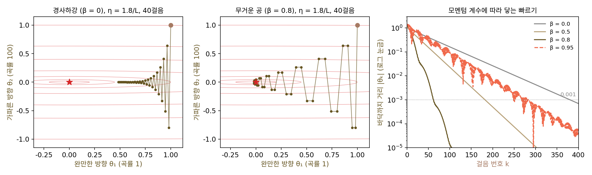
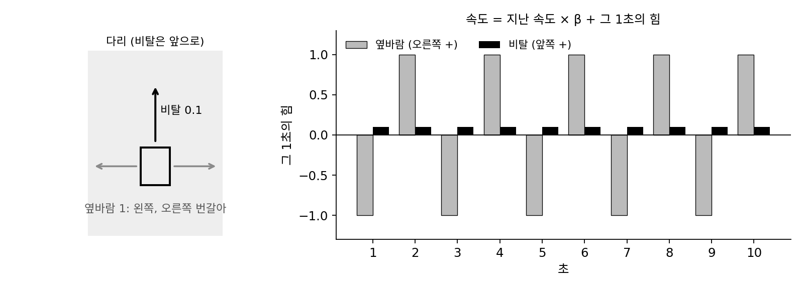
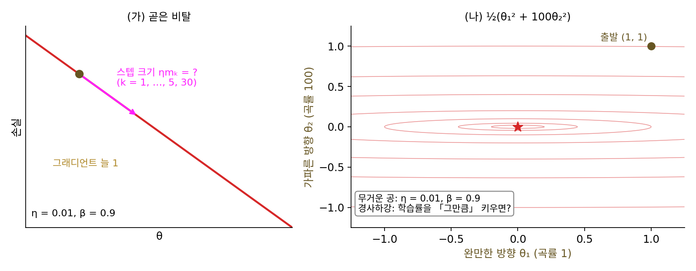
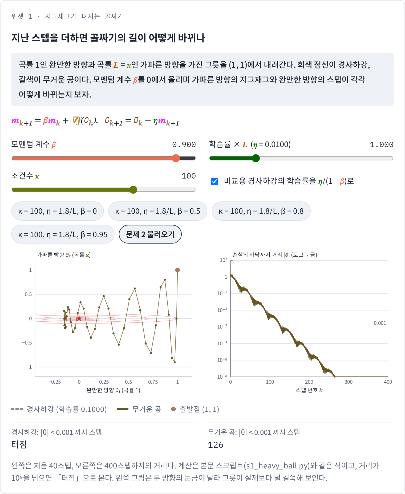
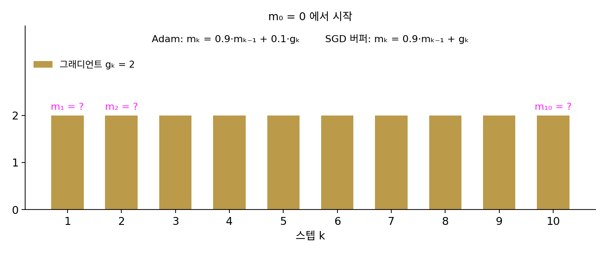

모멘텀: 무거운 공과 네스테로프 가속
이 장의 물음
길쭉한 골짜기에서 경사하강이 왜 느린지는 이미 보았다. 학습률은 가장 가파르게 휜 방향 때문에 2/L(곡률의 상한 L 로 정한 학습률의 벼랑)보다 작아야 하고, 그 작은 학습률로 가장 완만한 방향을 기어가야 하므로, 스텝 수는 조건수(가장 큰 곡률 ÷ 가장 작은 곡률)에 비례한다. 조건수가 100이면 스텝이 수백 번, 10000이면 수만 번이다. 뉴턴법처럼 헤시안(2차 편미분을 모은 행렬)으로 나누면 방향마다 스텝을 따로 맞춰 이 느림을 한 번에 지울 수 있지만, 파라미터가 1억 개인 신경망이라면 헤시안은 1억 × 1억, 곧 10¹⁶ 칸이다. 저장할 수도, 스텝마다 풀 수도 없다.
그런데 실제로 신경망을 학습시켜 본 사람은 다른 길을 알고 있다. 파이토치에서 torch.optim.SGD 를 만들 때 momentum=0.9 한 칸을 채우면, 그래디언트를 한 번 재는 비용은 그대로인데 학습이 눈에 띄게 빨라진다. 헤시안을 계산하지도 않았는데 무엇이 달라진 걸까? 모멘텀 계수를 0.99로 올리면 손실이 오히려 크게 출렁이기도 하는데, 그렇다면 0.9는 어디에서 나온 값일까?
이 장은 다음 물음에 차례로 답한다.
- 그래디언트 하나만 재는 비용으로, 지난 스텝들을 기억해 두면 지그재그가 어떻게 펴질까?
- 그렇게 해서 얼마나 빨라질까? 스텝 수가 조건수에 비례하던 것이 무엇에 비례하게 될까? 왜 하필 그것일까?
- 지난 스텝을 기억하는 방법이 오히려 손실의 바닥 둘레를 영영 맴도는 일은 없을까? 맴돌지 않게 하려면 그래디언트를 어디에서 재야 할까?
무거운 공: 지난 스텝을 기억하는 업데이트
조건수 100인 그릇 f(θ) = ½(θ₁² + 100θ₂²)을 경사하강으로 내려가 보자. θ₁ 방향의 곡률은 1, θ₂ 방향의 곡률은 100이다. 학습률은 가파른 방향의 벼랑 2/100 = 0.02 바로 아래인 0.018(1.8/L)로 잡고 (1, 1)에서 출발한다. 스텝 벡터를 두 성분으로 나눠 적으면 이상한 모습이 보인다. 가파른 방향의 스텝은 −1.8, +1.44, −1.152, +0.922, −0.737, +0.59로 부호를 바꿔 가며 골짜기의 양쪽 벽을 오가고, 완만한 방향의 스텝은 −0.018, −0.0177, −0.0174, −0.017, …로 늘 같은 쪽을 향하지만 아주 작다. 바닥까지 거리 0.001 안에 들기까지 381스텝이 걸린다. 스텝 하나하나는 그 자리에서 가장 가파른 쪽으로 갔는데, 스텝들을 이어 보면 가파른 방향에서는 거의 제자리를 오갔고 완만한 방향에서는 기어갔다. 지난 스텝들이 어느 쪽으로 움직였는지를 다음 스텝에 섞으면, 번갈아 바뀌는 스텝은 서로 지워지고 늘 같은 쪽인 스텝은 쌓이지 않을까?
역사: 폴랴크와 「반복법의 수렴을 빠르게 하는 몇 가지 방법」
이 생각을 처음 수렴 속도까지 따져 글로 낸 사람은 소련의 수학자 보리스 폴랴크(Boris Polyak, 1935–2023)다. 그는 1963년 모스크바 국립대학 역학수학부에서 대학원 과정을 마쳤고, 박사 후보 학위(소련의 첫 박사 학위) 논문의 제목은 「범함수를 최소화하고 방정식과 부등식을 푸는 그래디언트 방법」이었다. 1964년 소련 과학원의 『계산 수학과 수리 물리 저널』에 실린 논문 「반복법의 수렴을 빠르게 하는 몇 가지 방법(Some methods of speeding up the convergence of iteration methods)」에서 그는 한 스텝을 정할 때 지금 자리의 그래디언트에 바로 앞 스텝을 일정 비율로 더하는 반복을 다루었다. 지금 자리의 그래디언트만이 아니라 지금 자리와 바로 앞 자리 둘을 써서 다음 자리를 정하는 반복이다. 이 업데이트는 마찰이 있는 그릇 속을 구르는 무거운 공의 운동과 같은 꼴이어서 「무거운 공 방법(heavy ball method)」이라고 부른다. 폴랴크는 그 뒤 소련(지금의 러시아) 과학원 제어과학연구소에서 오래 일했고, 그가 쓴 교과서 『최적화 입문(Introduction to Optimization)』도 널리 읽혔다.


앞 스텝을 일정 비율로 더하는 거면 코드 한 줄이잖아요. 비율을 바꿔 가며 돌려 보면 어느 게 빠른지 금방 나올 텐데, 이게 논문까지 될 일이었어요?

민준 학생은 그 「돌려 보기」를 무엇으로 하죠? 1964년에는 책상 위에 두고 쓰는 개인 컴퓨터가 없었어요. 개인 컴퓨터는 1970년대 중반에야 나왔고요.

그럼 비율을 다섯 개 바꿔 가며 수백 스텝씩 세어 보는 일부터 쉽지 않았겠네요. 돌려 보고 고르는 대신, 돌리기 전에 어느 비율이 좋은지를 계산으로 알아내야 했겠어요.

그래요. 그리고 폴랴크가 다룬 것은 신경망이 아니라 범함수를 최소화하고 방정식을 푸는 반복법이었어요. 제목에 「반복법」이 들어간 것도 그래서예요. 이 방법이 딥러닝으로 다시 들어온 것은 반세기 뒤의 일이에요.

아, 학습시킬 신경망도 없고 노트북도 없이, 식만 가지고 수렴 속도를 따진 거네요.

그런데 앞 스텝의 절반만 더해도 벽 사이를 튀는 폭이 정말 줄까요? 몇 스텝만 손으로 따라가 보면 알 수 있을 것 같은데요.
지그재그 골짜기에서 지난 스텝 더하기
같은 그릇, 같은 학습률 0.018로, 이번에는 스텝마다 바로 앞 스텝의 절반을 더해 보자. 처음 다섯 스텝의 가파른 방향 자리는 1 → −0.8 → −0.26 → 0.478 → −0.0134 → −0.235다. 경사하강의 1 → −0.8 → 0.64 → −0.512 → 0.41 → −0.328과 비교하면 벽에서 벽으로 튀는 크기가 빨리 줄어든다. 앞 스텝과 부호가 반대인 지금 스텝에 앞 스텝의 절반이 더해지면서 서로 깎인 것이다. 완만한 방향은 다섯 스텝 뒤 0.8608에 와 있어서, 0.9132에 머문 경사하강보다 같은 다섯 스텝에 1.6배쯤 더 나아갔는데, 늘 같은 쪽인 스텝이 앞 스텝을 업고 쌓였기 때문이다.
더하는 비율을 바꿔 가며 바닥까지 거리 0.001 안에 드는 스텝 수를 세어 보자(학습률 0.018, 출발 (1, 1)).
| 앞 스텝을 더하는 비율 β | 0 (경사하강) | 0.5 | 0.8 | 0.9 | 0.95 |
|---|---|---|---|---|---|
| 스텝 수 | 381 | 183 | 63 | 131 | 249 |
비율을 0.8까지 올리면 스텝이 381에서 63으로 여섯 배 줄어들고, 그래디언트를 재는 횟수가 스텝 수와 같으므로 계산도 여섯 배 준다. 그런데 0.9, 0.95로 더 올리면 다시 늘어나는데, 기억이 너무 길면 지난 스텝의 기세가 바닥을 지나쳐도 꺾이지 않기 때문이다. 비율에는 알맞은 자리가 있다.
이렇게 지금 자리의 그래디언트에 지난 스텝들의 기세를 일정 비율로 이어 붙여 스텝을 정하는 방법을 모멘텀 (지난 스텝을 기억하는 업데이트 / momentum)이라 하고, 폴랴크의 논문에서 온 이름으로 무거운 공 방법이라고도 한다. 물리에서 질량 × 속도인 운동량도 영어로는 momentum이지만, 여기서는 최적화 기법과 그 기법이 들고 다니는 버퍼를 가리킨다. 이어 붙이는 비율 β(베타)를 모멘텀 계수라 한다. 파이토치와 같은 꼴로 적으면 기세를 담는 버퍼 m을 두고 한 스텝을 다음 두 줄로 계산한다.
버퍼를 풀어 쓰면 mₖ₊₁ = ∇fₖ + β∇fₖ₋₁ + β²∇fₖ₋₂ + …이므로, 지난 그래디언트를 모두 기억하되 오래된 것일수록 β배씩 흐리게 기억한다. 바로 앞 스텝이 −ηmₖ = θₖ − θₖ₋₁이므로, 두 줄을 한 줄로 합치면 θₖ₊₁ = θₖ − η∇f(θₖ) + β(θₖ − θₖ₋₁)이 된다. 경사하강의 스텝에 앞 스텝의 β배를 더한 것, 위 표에서 한 계산 그대로다. 버퍼 m이 공의 속도 구실을 하고, 스텝마다 β를 곱해 기세를 조금씩 깎는 것이 마찰 구실을 한다.

ML에서: momentum=0.9
파이토치의 torch.optim.SGD(model.parameters(), lr=0.1, momentum=0.9)에서 step()은 위 두 줄을 파라미터마다 계산한다. 버퍼 m은 옵티마이저가 파라미터 하나마다 같은 크기로 하나씩 들고 있으므로, 모멘텀을 켜면 옵티마이저가 차지하는 메모리가 파라미터만큼 늘어난다. 헤시안의 10¹⁶ 칸에 비하면 거의 공짜다. momentum의 기본값은 0(모멘텀 없음)이지만, 이미지 분류를 처음 크게 끌어올린 AlexNet(크리제프스키·서츠케버·힌턴, 2012)이 모멘텀 0.9로 학습했고, 잔차 신경망 ResNet(허 카이밍 외, 2015) 같은 뒤의 논문들도 0.9를 썼다. 0.9는 이론으로 셈해 나온 값이라기보다, 이런 논문들에서 무난하게 통한 뒤 널리 따라 쓰이게 된 값이다. 모멘텀 계수 0.9가 학습률과 어떻게 얽히는지는 아래 문제 2에서 계산한다.
문제 1. 바람 부는 다리 위의 쇼핑 카트
바퀴가 잘 구르는 쇼핑 카트를 비탈진 다리 위에 놓았다. 옆바람이 1초마다 왼쪽으로 1, 오른쪽으로 1을 번갈아 밀고(처음은 왼쪽), 비탈은 늘 앞으로 0.1을 민다. 카트의 속도는 1초마다 「지난 속도 × β + 그 1초의 힘」으로 바뀐다. (가) β = 0(카트가 지난 속도를 전혀 기억하지 못함)일 때 옆 속도와 앞 속도는? (나) β = 0.9일 때 처음 다섯 초의 속도와, 오래 지난 뒤의 속도는? (다) 앞 속도 ÷ 옆 속도는 각각 얼마인가?

(가)는 기억이 없으니까 옆 속도가 +1, −1, +1, …이고 앞 속도는 0.1이에요. (나)는 0.9씩 기억하니까 둘 다 열 배쯤 커지겠죠. 옆으로 10, 앞으로 1. 비율은 그대로 0.1이고요.
옆 속도를 실제로 다섯 초만 따라가 볼까요?
1, 그다음 0.9 × 1 − 1 = −0.1, 그다음 0.9 × (−0.1) + 1 = 0.91, −0.181, 0.837… 어, 커지지 않네요. 오히려 1보다 작아요. 앞 속도는 0.1, 0.19, 0.271, 0.344, 0.41로 계속 늘고요.
오래 지난 뒤는 다섯 개만 봐서는 모르겠다. 더는 안 바뀌는 속도를 찾으면 되지 않을까?
옆 속도는 부호가 계속 바뀌는데? 안 바뀌는 값이 없잖아.
그럼 크기는 같고 부호만 바뀌는 속도를 찾으면 돼. 「속도 = 0.9 × (−속도) + 1」을 풀면 1/(1 + 0.9)라서 옆 속도는 +0.5263과 −0.5263을 오가. 앞은 부호가 안 바뀌니까 「속도 = 0.9 × 속도 + 0.1」을 풀면 0.1/(1 − 0.9), 1에 붙고.
같은 0.9를 곱했는데 앞 속도는 열 배가 되고 옆 속도는 절반이 됐어요. 무엇이 달랐죠?

힘의 부호가 늘 같으면 기억한 속도와 새 힘이 같은 쪽이라 쌓이고, 번갈아 바뀌면 기억한 속도가 새 힘과 반대쪽이라 깎여요. 그래서 앞 속도 ÷ 옆 속도가 0.1에서 1.9로, 열아홉 배가 됐어요.

조별 과제 단톡방에서 회의 시간을 두고 「월요일」 「아니 화요일」 하며 의견이 오갈 때는 매번 마지막 말을 따르면 계속 흔들리는데, 지난 의견들을 같이 기억하면 서로 상쇄돼서 차분해지고, 다들 「마감은 금요일」이라고 할 때는 그게 점점 확실해지는 거랑 같네요.
문제 2. 학습률을 열 배 키운 것과 같은가
(가) 그래디언트가 늘 1인 비탈에서 η = 0.01, β = 0.9의 무거운 공이 내딛는 스텝 크기 ηmₖ를 처음 다섯 스텝과 30스텝째에 구하라. 스텝 크기는 어디로 다가가는가? (나) 그렇다면 조건수 100 그릇 ½(θ₁² + 100θ₂²)에서 η = 0.01, β = 0.9의 무거운 공은, 학습률을 그만큼 키운 경사하강과 같은가? 둘을 (1, 1)에서 돌려 비교하라. (풀어 본 뒤 위젯 1의 「문제 2 불러오기」로 확인해 보자.)

(가)는 0.01, 0.019, 0.0271, 0.0344, 0.041이고 30스텝째에 0.0958이에요. 0.01 × (1 + 0.9 + 0.9² + …) = 0.01/(1 − 0.9) = 0.1로 다가가요. 모멘텀 0.9는 학습률을 열 배로 키운 거네요. 그럼 (나)는 학습률 0.1의 경사하강과 같겠죠.
학습률 0.1을 그 그릇의 가파른 방향에 넣으면 어떻게 되죠?

벼랑이 2/100 = 0.02인데 0.1이면… 돌려 보니 θ₂가 1, −9, 81, −729, 6561로 터져요. 그런데 η = 0.01, β = 0.9의 무거운 공은 126스텝 만에 바닥 0.001 안에 들어와요. 같은 거라면서요?
서연 학생이 계산한 열 배는 그래디언트가 「늘 같은」 비탈에서였어요. 가파른 방향의 그래디언트는 스텝마다 어떻게 바뀌었죠?

벽 사이를 오가니까 부호가 번갈아 바뀌어요. 아, 문제 1의 옆바람이랑 같은 꼴이네요.
옆바람 때는 속도가 오히려 1보다 작아졌잖아. 여기서도 그래?

부호가 번갈아 붙으니까 0.01 × (1 − 0.9 + 0.9² − …) = 0.01/(1 + 0.9) = 0.00526이야. 열 배가 아니라 오히려 절반쯤으로 줄어.
그럼 완만한 방향과 가파른 방향을 나란히 놓으면요?
같은 쪽으로 꾸준한 방향에서는 학습률이 열 배, 오가는 방향에서는 절반이 되는 거예요. 학습률 하나를 키우는 것과 달리, 방향마다 다르게 키우고 줄여요.

그러니까 모멘텀을 켰다고 학습률을 열 배 키운 것처럼 생각하고 lr을 그대로 두면 안 되는 것도, 거꾸로 lr을 1/10로 줄여야 한다고만 생각하는 것도 반만 맞는 거군요. 장학금 심사가 「꾸준히 잘한 학기 수」를 보면 한 학기 반짝은 묻히고 꾸준함은 크게 쳐 주는 거랑 같네요.
위젯 1에서 문제 2 설정을 불러와, 무거운 공과 학습률을 열 배 키운 경사하강이 그릇 위에서 각각 어떻게 가는지 나란히 확인해 보세요.

문제 3. Adam 의 1차 모멘트
Adam 옵티마이저는 그래디언트의 평균을 mₖ = β₁mₖ₋₁ + (1 − β₁)gₖ로 적어 둔다(1차 모멘트, m₀ = 0, 기본값 β₁ = 0.9). 그래디언트가 늘 2라고 하자. (가) m₁, m₂, m₁₀은? (나) 같은 그래디언트에서 파이토치 SGD의 모멘텀 버퍼(β = 0.9)는? (다) Adam 논문은 mₖ를 1 − β₁ᵏ로 나눠 쓴다. 나눈 값은?

Adam의 m도 모멘텀이니까 SGD 버퍼랑 같겠죠. 2, 3.8, 5.42, …로 늘어서 20쯤에 가요.
잠깐, 식에 (1 − 0.9)를 곱하잖아. 첫 스텝부터 m₁ = 0.1 × 2 = 0.2라서 2가 아니야.
그럼 그다음은?
m₂ = 0.38, m₁₀ = 1.3026이고, 60스텝째에 1.9964로 2에 붙어. 20이 아니라 2로 가네. 지난 그래디언트들에 무게 0.1, 0.09, 0.081, …을 주는데 그 합이 1이니까 가중 평균이야.
민준 학생이 말한 숫자는 어느 쪽 버퍼죠?
아, SGD 버퍼예요. 그건 (1 − β)를 안 곱하니까 합이에요. 10스텝째 13.03, 60스텝째 19.96. 같은 그래디언트에서 Adam의 m보다 꼭 열 배 크네요. 문제 2의 1/(1 − 0.9) = 10배랑 같은 숫자예요.
그럼 Adam의 m₁ = 0.2는 그래디언트 2를 잘 나타낸 값인가요?

아니요, 열 배나 작아요. 평균이라면서 왜 처음에는 이렇게 작지…
m₁에 들어간 무게를 다 더하면 얼마예요?
0.1뿐이에요. m₂는 0.1 + 0.09 = 0.19고요. m₀ = 0에서 시작한 탓에 무게의 합이 1 − 0.9ᵏ밖에 안 돼서 0 쪽으로 치우쳐 있었어요.
그럼 그 합으로 나누면 되겠네?
응. m₁ = 0.2/0.1 = 2, m₂ = 0.38/0.19 = 2, m₁₀ = 2로 처음부터 정확히 2가 돼. 그게 Adam의 편향 보정이야.
SGD 버퍼는 합이라 학습률과 곱해져 스텝이 열 배 크고, Adam은 평균이라 학습률이 곧 스텝 크기에 가깝군요. 두 옵티마이저 사이에서 lr을 그대로 옮기면 안 되는 이유가 하나 늘었어요. 평점을 「총점」으로 주는 과목과 「평균」으로 주는 과목을 같은 눈금으로 비교하면 안 되는 것처럼요.